Daigomachi, Ibaraki: things to do, food and stays
Daigomachi · Ibaraki
Daigomachi
Highlighted on the Ibaraki map.
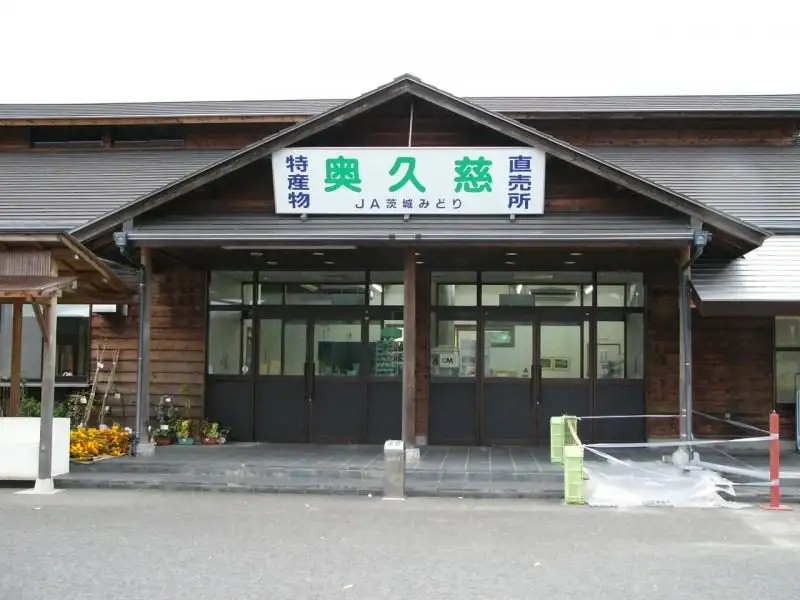
Stay
袋田温泉 思い出浪漫館
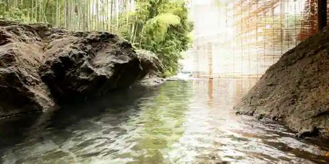
Fukuroda Onsen Omoide Roman Kan
Inn at Fukuroda Onsen in Fukuroda, Daigomachi with buffet meals.
丘の上のゲストハウス「Daigo house」
Oka No Ueno Guesthouse (Daigo house)
まちやど「Motomachi」
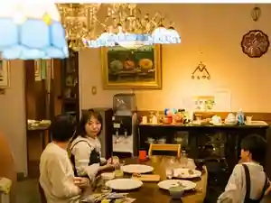
Machiyado (Motomachi)
Inn in Ogo, Daigomachi with breakfast available.
大子温泉 ホテル奥久慈館【伊東園ホテルズ】
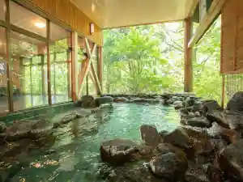
Ogo Onsen Hotel Oku Kuji Kan (Ito Sono Hotels)
Hotel at Ogo Onsen in Ikeda, Daigomachi with buffet meals.
玉屋旅館
Tamaya Ryokan
旅館本田屋
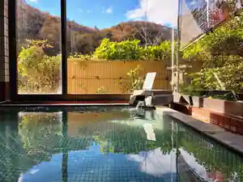
Ryokan Honda Ya
Ryokan inn in Yada, Daigomachi with a large communal bath.
大子温泉やみぞホテル
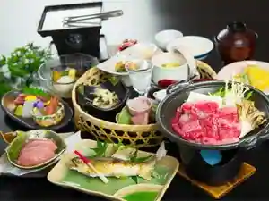
Ogo Onsen Yamizo Hotel
Hotel at Ogo Onsen in Yada, Daigomachi with a sauna.
大子広域公園オートキャンプ場「グリンヴィラ」
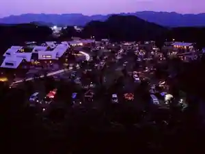
Ogo Koiki Koen Otokyanpu Ba (Gurin Villa)
ログテラス鰐ケ渕
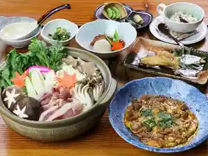
Rogu Terrace Wani Ke Fuchi
上小川レジャーペンション
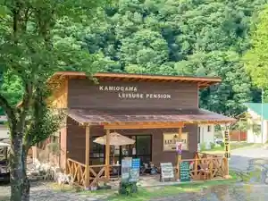
Ue Ogawa Reja Pension
悠久の宿 滝美館
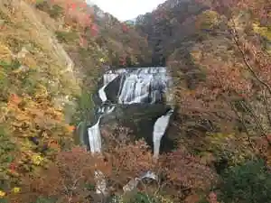
Yukyu No Yado Taki Bi Kan
月居温泉 白木荘
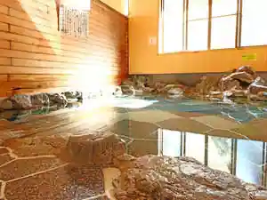
Gatsu Kyo Onsen Shiraki So
Inn at Gatsukyo Onsen in Shoseise, Daigomachi.
Dining
弥満喜
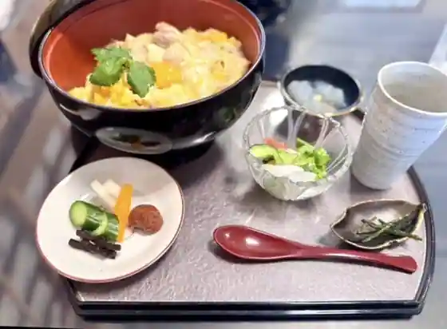
Ya Maki
寿昌庵 けん坊
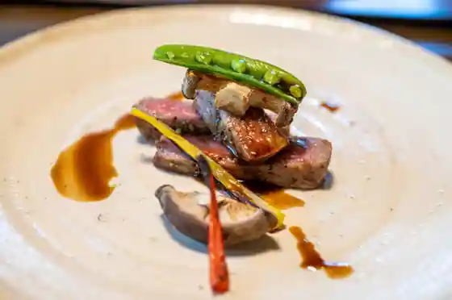
Jusho Iori Ken Bo
月待の滝 もみじ苑
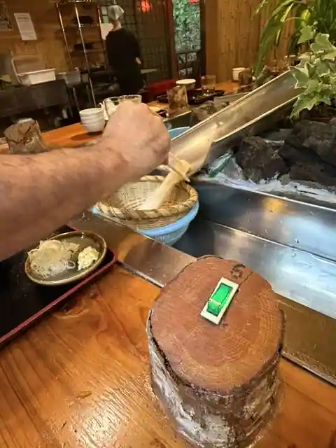
Tsukimachi No Taki Momiji En
昔屋
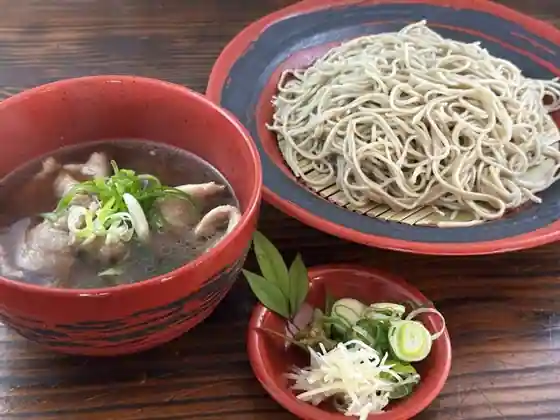
Mukashi Ya
ダイゴ カフェ
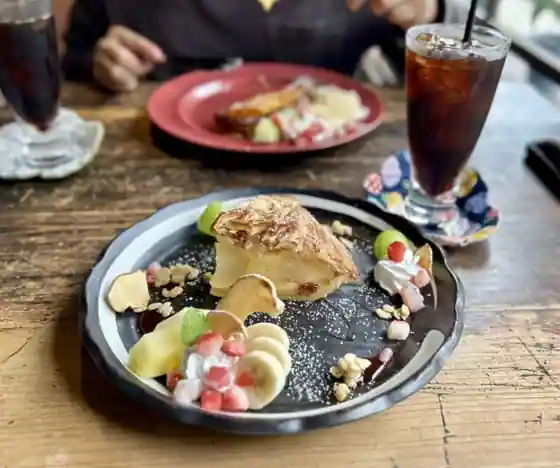
Daigo Cafe
双葉食堂
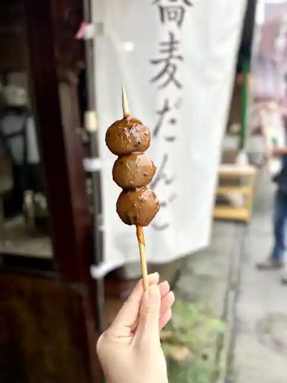
Futaba Shokudo
屋台ラーメン醤家 大子
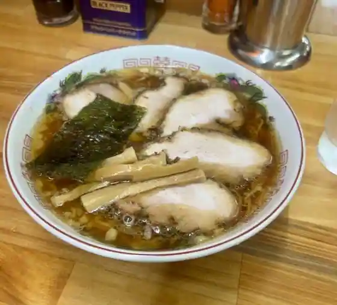
Yatai Ramen Sho Ie Ogo
永福
Eifuku
ピッツェリア コゾー
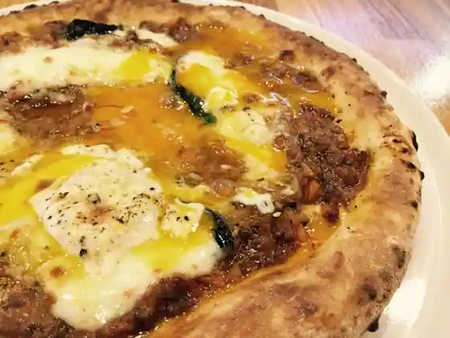
Pizzeria Kozo
多喜乃屋 菊池みやげ店
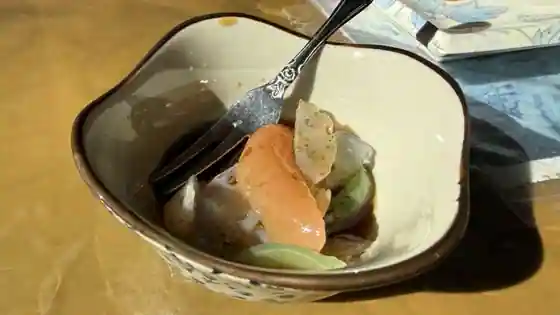
Takino Ya Kikuchi Miyage
道の駅 奥久慈だいご
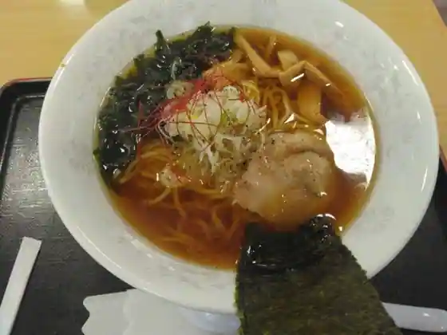
Michi No Eki Oku Kuji Daigo
思い出浪漫館
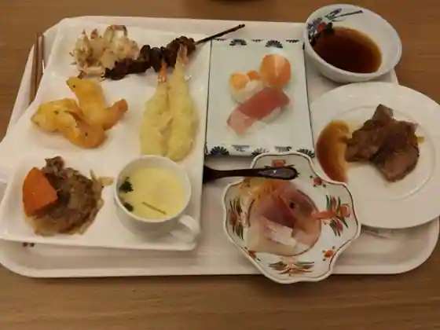
Omoide Roman Kan
とん鈴
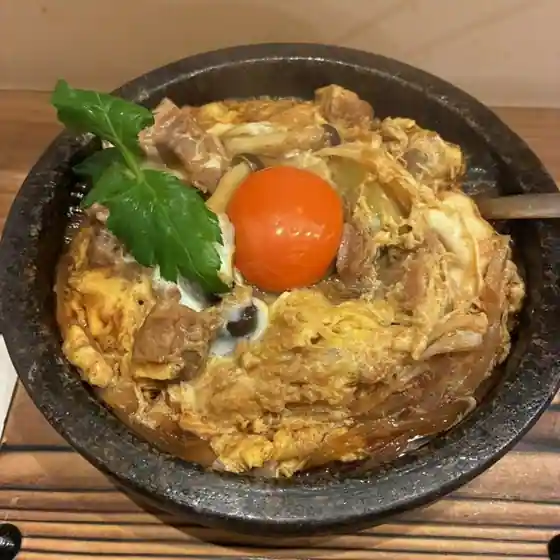
Ton Suzu
川ふじ
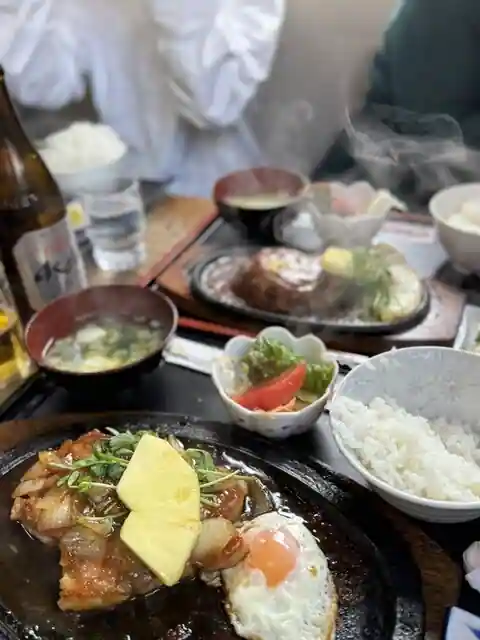
Kawa Fuji
サンローラン
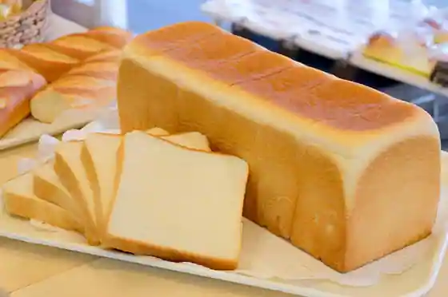
Sanroran
前原
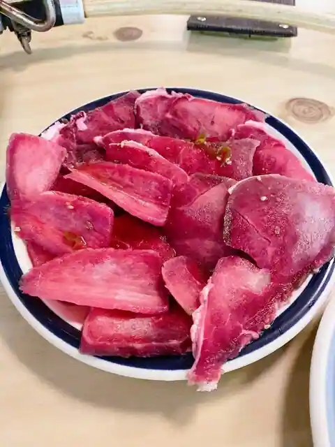
Maehara
瀧見茶屋
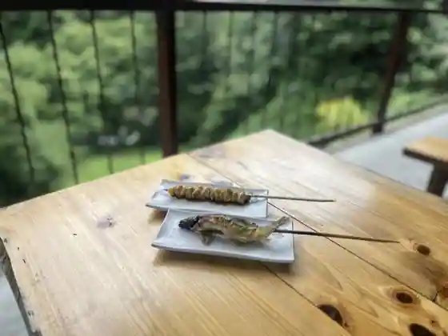
Taki Ken Chaya
こんにゃく関所
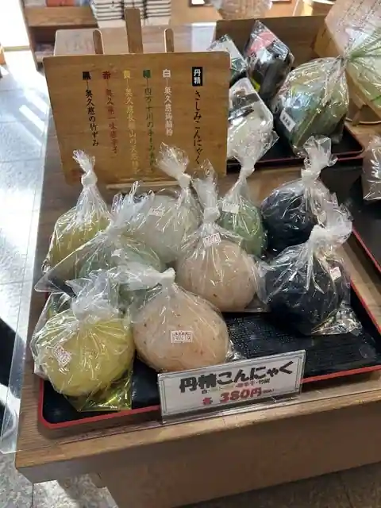
Konnyaku Sekisho
咲くカフェ
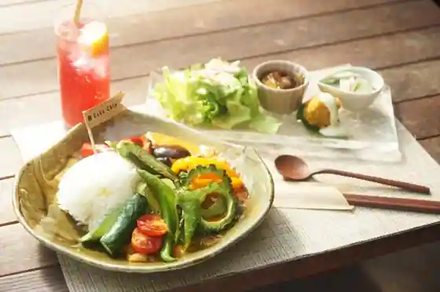
Saku Cafe
奥久慈屋 吉餅
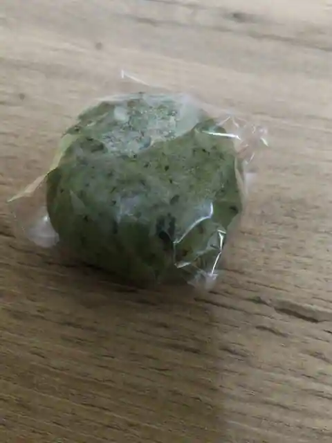
Oku Kuji Ya Kichi Mochi
フランボワーズ
Furanbowazu
新滝
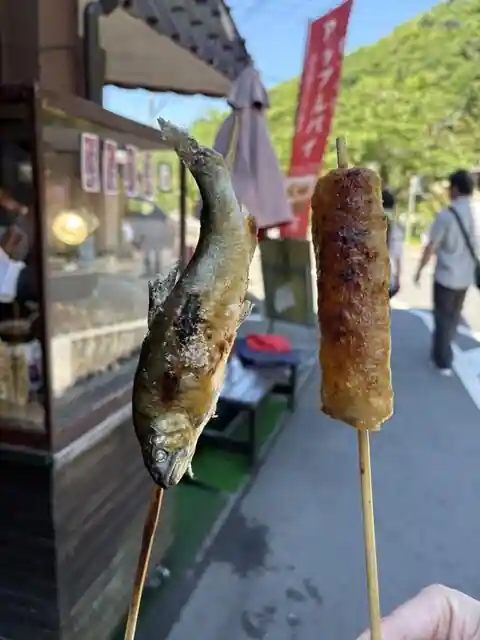
Shin Taki
ホテル奥久慈館
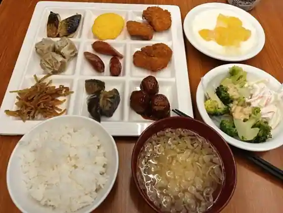
Hotel Oku Kuji Kan
Sights
Fukuroda Falls
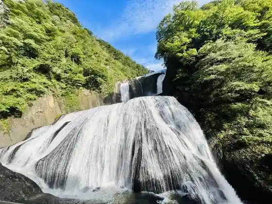
Yamizo Yama
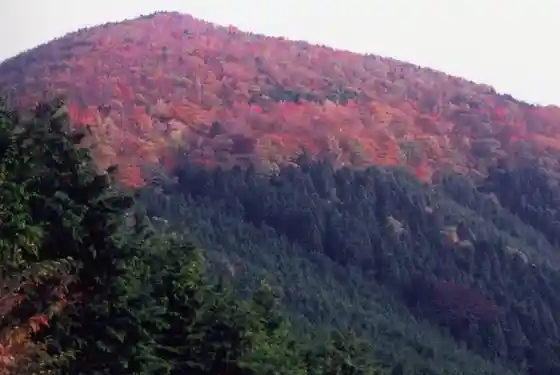
Nantai Yama
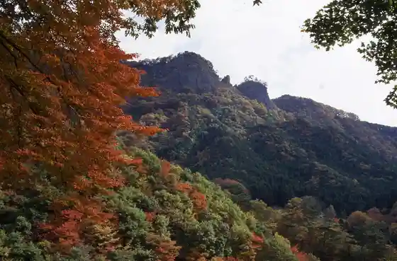
Eigenji
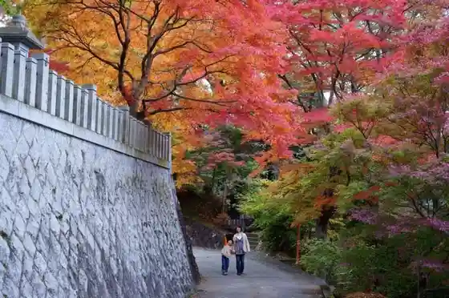
Fukuroda Onsen Omoide Roman Kan
Daigomachi Onsen Yamizo
Gatsu Kyo Onsen Shiraki So
Ribasaido Oku Kuji Fukuju So
Roguterasu Wanigafuchi
Hojo Kan Bekkan
Yukyu no Yado Taki Bi Kan
Daigomachi Koiki Koen Tamokuteki Onsen Puru Foresupa Daigomachi
Roadside Station Oku Kuji Daigo
Daigomachi Onsen Hoyo Center Shinrin no Onsen
Gaidai no no Shidare Sakura
Oku Kuji Cha no Sato Park
Tsukimachi Falls
Daigomachi Oyaki Gakko
Kyanpu Village Yanase
Daigomachi Koiki Koen Oto Campground Gurinvira
Kuji Kawa
Kantetsu Yuki Suke no Kahi
Osawa Ana Kannon
Kyu Kamioka Shogakko
San Village Kanko Ringo Sono
Kutsukake Toge (Kutsukaketoge)
Nishi Kin Tsutsujiga Oka
Namase Falls
Ho Ryu Tera
Konnyaku Sekisho
JA Ibaraki Midori Tokusambutsu Chokubai Tokoro (Oku Kuji)
Soba Tokoro Masuko Iori
Sakana Saku Shoten (Ari)
Eifuku
Jusho Iori Ken Bo
Kakure Sato Sho no Ie
Daigomachi Buruwarii
Derikashoppu Kuji Ya
Ton Suzu
Fujita Shokudo
Wafu Resutoran Shichi Magari
Tsukimachi Falls Momiji En
Oku Kuji Resutoran Lutin (Ryutan)
Tokiwa
Mukashi Ya
Futaba
Sanzoku Ryori Maehara
Fujimaruya
Oku Kuji Zeze
Takimoto Ya Main Shop
Kuji Kawa no Shiga (Kori Hana)
Shosei Se Jizo Sakura
Kutsukake Toge no Yamazakura